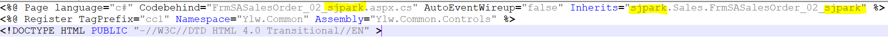

\<\<FrmSASalesOrder_02_sjpark - 복사본.aspx>>
aspx
* 처음 3줄

- Codebehind => 이름 변경
- Inherits (aspx의) 경로 => sjpark - Sales - ~.aspx
\<HTML> 부분 (처음부터 끝까지 이긴함)
1. 화면의 컨트롤(마스터) 부분 (속성 정하기)
\<변수>값123\</변수> => 여러 개로 구성되어있음
+. (58번 서버) csproj에서 수정하면 더 편하다
2. 변수

시트에 필요한 변수 작성 (EX. No, 판매구분 등등)
(마스터 부분은 id가 있기 때문에 변수 설정이 필요 없다)
양식 : ms~
고객사 : 컬럼 추가해주세요~
=> ms~ 추가
3. Function (함수) (Ace의 툴바)

aspx => 화면에 보여주는 부분이므로 => JumpOut
화면에 있는 데이터를 긁어가서 점프하기 때문에
cs => JumpIn 다른 화면이 준 데이터를 보여줌
4. Page_Load() (제일 중요 / 거의 이거만 고침)

순서가 중요 => 60 => 전체 컬럼 갯수
G&I 의 가장 큰 특징 중 하나가 특징대로 출력한다는 점이다
Ace에서는 컬럼 추가 시 위치는 별도로 지정 안해도 되지만
G&I는 순서가 정해져 있기 때문에 중간에 추가하면
다시 일일히 뒤로 내려야한다
5. 코드도움 함수 (Sub txt\~\~~_CodeHelp(IsDblClick)
코드도움 추가하려면 이걸 하나 추가하면 된다
6. Private Sub ylwsh_Change(Col, Row)
====
영림원 시트
사용자가 시트를 바꿀 때
ex. 수량, 판매단가 쓰면 자동으로 판매금액 나오는 것
조회 누르면 - function_query 이벤트 실행
pageMode = Query
PageParam.value - 페이지 받은거 넣음